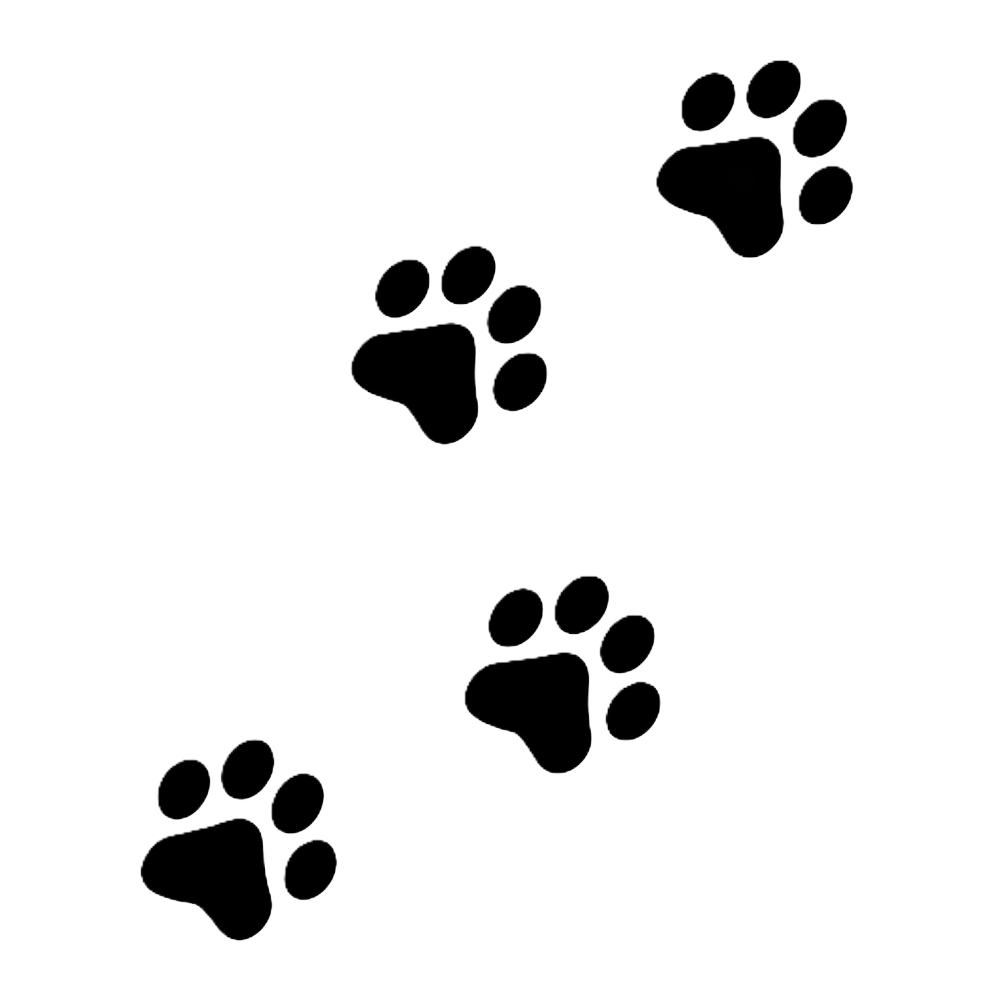

¡BIENVENIDO AL MISHI INFORMATIVO!
¡LA NOTA VERDE DEL MISHI!
Haz clic en una Mishi Huella para descubrir más.
Lo que nos rodea.
¿Qué es el medio ambiente?
Es el conjunto de todos aquellos elementos químicos, físicos y biológicos con los cuales los seres vivos interactúan tu y yo somos parte de este. Además, en el caso del ser humano, también incluye todos esos elementos culturales y sociales que influyen en su vida. Es importante cuidar del medio ambiente como ya aclaramos vivimos en el y es nuestra responsabilidad cuidar de los siguientes factores:
Supervivencia humana, Equilibrio ecológico,Bienestar, Futuro sostenible, Biodiversidad.Entre otros, son ejemplos del porque debemos de cuidar y preservar nuestro planeta.
El MIshi Empesario esta comprometido con la reducción y divulgacion de la huella ecológica. Ser consiente de nuestro entorno nos ayuda a desarrollar conciencia crítica y compromiso con la protección del entorno. Mas adelante en la pestaña de "Propuestas el Mishi" te sugerimos algunas sugerencias y actividades para lograrlo

Por un Mishi sano!
¿Qué significa tener buena salud?
Tener buena salud significa disfrutar de un estado de completo bienestar físico, mental y social, según la Organización Mundial de la Salud (OMS). Esto implica no solo la ausencia de enfermedades, sino también adoptar hábitos que promuevan el bienestar general, como una alimentación equilibrada, ejercicio regular y cuidado emocional.En resumen, tener buena salud es un equilibrio integral que requiere esfuerzo y atención constante.
Para poder cuidar a otros tenemos que cuidar de uno mismo. El mishi se preocupa por tu salud por ello es importante conocer que cosas te pueden apotar a tu salud. Fomentamos hábitos saludables:

¿Comó puedo Mejorar?
Mishi realiza:
Estas son unas cuantas sugerencias para mantenerte bien.
- Dieta equilibrada: Para mantenerte equilibrado debes consumir una variedad de alimentos, incluyendo frutas, verduras, proteínas, carbohidratos y grasas saludables, en las cantidades adecuadas. Te entiendo, yo amo los sobres, pero comerlos mucho hace daño.
- Consumo de agua: Es importante beber suficiente agua a lo largo del día para mantener el cuerpo hidratado, especialmente si hace calor. ¡Mishi, hidrátate!
- Cuidado de la salud mental: Mente feliz, vida feliz. Mírame a mí, soy un mishi feliz. Para lograrlo, te recomiendo practicar técnicas de relajación, buscar ayuda profesional y tener un buen soporte social.
- Descanso adecuado: Debes dormir bien. Lo adecuado para ti, humano torpe, es dormir entre 7 y 9 horas para que tu cuerpo se recupere. Yo duermo entre 13 y 16 horas porque soy un gato.
Propuestas el Mishi.
Ser consiente de tu mishi entorno puede hacer el cambio.
Este es el top 5 del Mishi Empresario de cosas que puedes hacer.
| # | Acción | Descripción |
|---|---|---|
| 1 | Reducir el uso de plástico | Usar botellas reutilizables, bolsas de tela y evitar productos de un solo uso. |
| 2 | Reciclar | Separar correctamente la basura en orgánica, reciclable y no reciclable. |
| 3 | Ahorro de energía | Apagar luces y dispositivos electrónicos cuando no se usen. |
| 4 | Transporte sostenible | Caminar, usar bicicleta o transporte público en lugar del coche. |
| 5 | Participar en campañas ambientales | Unirse a jornadas de limpieza, reciclaje o reforestación. |
Comparte tus Mishi propuestas y Comentarios!
¡Tu opinión es muy importante para el Mishi!